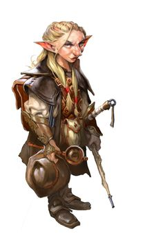
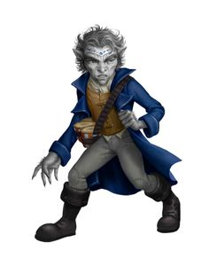
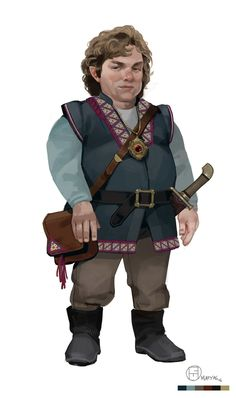

В начале создания персонажа игрок должен выбрать одну из множества фентезийных рас. Каждая раса по своему уникальна и обладает теми или иными особенностями, характеристиками и бонусами, возможностью выбрать множества классов. Выбор той или иной расы влияет на ваш отыгрыш в целом. Стандартом для обычной 5ed редакции Dungeon & Dragons являются 9 фентезийных рас. Но никто вас не останавливает придумать собственную расу, если это не противоречит сэттингу мира или задумкам мастера.
Навигация по расам:
Человек
Дварф
Гном
Полурослик
Полуорк
Эльф
Полуэльф
Тифлинг
Драконорожденный

|

|

|

|

|
Люди -самая распространённая раса в Забытых Королевствах. Их главное преимущество перед всеми остальными расами это то, что они могут выбрать любой класс и специализацию. В среднем они живут около 70 лет и достигают роста 180 см.
У людей есть только одна специальная возможность: они могут быть любого класса персонажей и подняться до любого уровня в любом классе. Выбор других рас в этих областях ограничен. Также, люди более общительны и терпеливы чем другие расы, со значительно меньшим недовольством, принимают компанию эльфов, дварфов, и остальных. Благодаря этим способностям и склонностям, люди стали значительной силой в мире и часто правят империями, которыми другие расы (из-за их расовых склонностей) управлять затрудняются.
В отличие от дварфов и эльфов, у людей не существует такого понятия, как подраса. Все национальности и расы рода людского, могут без труда скрещиваться между собой, и их дети получат черты одного или обоих родителей. Всякая изолированная группа людей имеет склонность к установлению своих особенностей, но они могут измениться через несколько поколений, под воздействием новых поселенцев или захватчиков.
Многоликие
Со своей склонностью к миграции и завоеваниям, люди более разнообразны физически, чем другие распространенные расы. Не существует типичной внешности человека. Рост отдельного представителя может составлять от 5 до 6 фт. (от 152 до 184 сантиметров), а вес — от 125 до 250 фунтов (от 60 до 112 килограмм). Оттенок кожи у людей варьируется от почти чёрного до очень бледного, а волосы — от чёрного до светлого тонов (волнистые, кудрявые или прямые); мужчины могут носить волосы на лице, густые или редкие. Многие люди имеют примесь нечеловеческой крови, выдающей черты эльфа, орка, или предков другого происхождения. Люди достигают совершеннолетия около двадцати лет, и редко проживают одно столетие.
Разнообразие во всём
Люди являются самыми приспособленным и амбициозным народом среди распространённых рас. Их вкусы, нравы и обычаи сильно отличаются во множестве разных земель, где они поселились. Однако там, где они селятся, они остаются надолго: строят города, стоящие веками, и великие королевства, сохраняющиеся множество столетий. У отдельного человека может быть относительно короткая продолжительность жизни, но человеческая нация и культура сохраняет традиции от своих истоков на время, намного превышающее память одного человека. Они живут сегодняшним днём, что весьма хорошо подходит для приключенческой жизни, и позволяет вдобавок строить планы на будущее, со стремлением оставить после себя прочное наследие. Индивидуально или в группах, люди легко приспосабливаются к ситуации, и всегда остаются внимательными к изменяющейся политической и социальной динамике.
Прочные институты
Там, где один эльф или дварф могут взять ответственность за охрану особого места или великой тайны, человек создаёт священные порядки и институты. В то время как кланы дварфов и старейшины полуросликов передают свои традиции новым поколениям, человеческие храмы, государства, библиотеки и своды законов запечатлевают их традиции в анналах истории. Люди мечтают о бессмертии, но (за исключением тех, кто становится нежитью или достигает божественного восхождения, чтобы избежать оков смерти) достигают его, когда продолжают жить в памяти, после смерти. Хотя некоторые люди могут быть ксенофобами, в целом их общество очень смешано. На землях людей обитает большое количество нечеловеческих рас, по сравнению с количеством людей, живущих на землях нелюдей.
Воплощение амбиций
Люди, ищущие приключений, являются самыми смелыми и амбициозными представителями смелой и амбициозной расы. Они стремятся заработать славу в глазах своих товарищей, накапливая власть, богатство и популярность. Более чем другие народы люди борются за цель, а не за расширение территорий или процветание отдельных фракций.
Человеческие имена и этносы
Поскольку культура людей самая разнообразная среди всех существующих рас, у них нет типичных имён. Некоторые родители дают своим детям имена из других наречий, например, из Дварф- ского или Эльфийского (произносимые более или менее правильно), но большинство родителей даёт имена, связанные с культурой своего региона или традициями предков. Культура быта и физические характеристики людей могут сильно меняться в зависимости от региона. В Забытых Королевствах, например, одежда, архитектура, кухня, музыка, и литература в северо-западных землях Серебряных Пустошей отличаются от тех, что есть в далёком Тёрмише или Импилтуре на востоке, и совсем не похожи на их аналоги в далёком Кара-Туре. Физические характеристики людей различаются в соответствии с переселениями их предков, поэтому люди Серебряных Пустошей имеют все возможные сочетания цветов кожи. В Забытых Королевствах широко известны девять этнических групп, хотя более дюжины других находятся в более локализованных областях Фаэруна. Эти группы и типичные имена их представителей могут быть использованы в качестве примера, вне зависимости от того, из какого мира ваш человек.
Дамарец
Начавшие свою историю на северо-западе Фаэруна, Дамарцы имеют средний рост и сложение, оттенок их кожи варьируется от смуглого до светлого. Их волосы обычно коричневые или чёрные, а цвет глаз сильно отличается, хотя карие — самые распространённые.
Имена дамарцев: (Мужские) Айвор, Бор, Глэр, Григор, Иган, Козеф, Миваль, Орел, Павел, Сергор, Фодель; (женские) Алетра, Зора, Кара, Катернин, Мара, Натали, Ольма, Тана; (фамилии) Берск, Дотск, Куленов, Марск, Немецк, Стараг, Чернин, Шемов
Иллусканец
Иллусканцы — высокий, светлокожий народ с голубыми или серыми со стальным оттенком глазами. У большинства чёрные волосы цвета вороньего крыла, но у тех, кто населяет край северо-запада — светлые, рыжие или светло-русые волосы.
Имена иллусканцев: (Мужские) Блас, Бран, Гет, Ландер, Лют, Малсер, Стор, Таман, Урт, Фрат, Эндер; (женские) Амафрея, Бетха, Вестра, Кетра, Мара, Ольга, Силифрей, Цефрея; (фамилии) Брайтвуд, Виндривер, Лакмэн, Хелдер, Хорнрейвен, Штормвинд
Калишит
Поскольку культура людей самая разнообразная среди всех существующих рас, у них нет типичных имён. Некоторые родители дают своим детям имена Более низкие и стройные, чем большинство других людей, калишиты имеют смугло-коричневую кожу, волосы и глаза. Они обитают в основном на югозападе Фаэруна.
Имена калишитов: (Мужские) Асеир, Бардеид, Зашеир, Кхемед, Мехмен, Судейман, Хасеид; (женские) Атала, Джасмаль, Зашеида, Мейлиль, Сейдиль, Сейпора, Хама, Яшеира; (фамилии) Баша, Джассан, Думеин, Кхалид, Мостана, Пашар, Рейн
Мулан
Преобладающие на восточных и юго-восточных берегах Внутреннего моря, муланы, как правило, высокие, стройные, с кожей цвета янтаря и карими или светло-коричневыми глазами. Волосы у них от чёрного до тёмно-коричневого оттенков, но на землях, где муланы наиболее многочисленны, дворяне и другие жители сбривают все волосы.
Имена муланов: (Мужские) Аот, Барерис, Кетот, Мумед, Рамас, Со-Кехур, Тхазар-Де, Урхур, ЭхпутКи; (женские) Аризима, Золис, Мурити, Нефис, Нулара, Сефрис, Тола, Умара, Чатхи; (фамилии) Анкхалаб, Анскульд, Натандем, Серпет, Уутракт, Фезим, Хахпет
Рашеми
Рашеми, обитающие к востоку от Внутреннего моря и часто смешивающиеся с муланами, обычно низкорослые, коренастые и мускулистые. У них, как правило, тёмная кожа, чёрные глаза, и густые чёрные волосы.
Имена рашеми: (Мужские) Боривик, Владислак, Джандар, Канитар, Мадислак, Ральмевик, Фаургар, Шаумар; (женские) Имзель, Иммит, Наварра, Таммит, Файварра, Хульмарра, Шеварра, Юльдра; (фамилии) Дайрнина, Илтазяра, Мурнитара, Стаянога, Улмокина, Чергоба
Тетирец
Распространившиеся вдоль всего побережья Меча в западной части Фаэруна, тетирцы являются людьми среднего сложения и роста со смуглой кожей, которая светлее у северных поселенцев. Цвет волос и глаз у них сильно различается, но коричневые волосы и голубые глаза — наиболее типичны. Тетирцы в основном используют чондатанские имена.
Тёрами
Рожденные на южных берегах Внутреннего моря, Тёрами, как правило, высокие и мускулистые люди с тёмно-красной кожей, чёрными волнистыми волосами и чёрными глазами.
Имена тёрами: (Мужские) Антон, Диеро, Маркон, Пьерон, Римардо, Ромеро, Салазар, Умберо; женские) Балама, Вонда, Джалана, Дона, Куара, Луиза, Марта, Селизе, Фаила; (фамилии) Агосто, Асторио, Домине, Калабра, Маривальди, Писакар, Рамондо, Фалоне
Чондатанец
Чондатанцы — стройный, смуглый народ с коричневыми, от светлых до почти чёрных, волосами. Они высокие, у них зелёные или карие глаза, но это применимо не ко всем. Чондатанцы преобладают в центральных землях Фаэруна, вокруг Внутреннего моря.
Имена чондатанцев: (Мужские) Горстаг, Грим, Дарвин, Дорн, Маларк, Морн, Рэндал, Стедд, Хельм, Эвендур; (женские) Арвин, Джессаиль, Керри, Лурин, Мири, Рован, Тесселе, Шандри, Эсвель; (фамилии) Бакмэн, Грэйкасл, Дандрэгон, Толстаг, Эвенвуд, Эмблкроун
Шу
Шу — наиболее многочисленная и могущественная раса в Кара-Туре, далеко на востоке Фаэруна. У них желтовато-бронзовый оттенок кожи, с тёмными волосами и чёрными глазами. Фамилии шу обычно стоят перед именами.
Имена шу: (Мужские) Ан, Вэнь, Лонг, Лянь, Менг, Он, Фай, Цзюн, Цзянь, Чен, Чи, Шань, Шуй; (женские) Бай, Ксяо, Лей, Мей, Тай, Цзя, Чао, Шуй; (фамилии) Вань, Као, Кунг, Лао, Линг, Мей, Пинь, Сум, Тань, Хуан, Чиень, Шин
Особенности людей
Сложно делать какие-либо обобщения относительно людей, но ваш персонаж-человек обладает следующими особенностями.
Увеличение характеристик. Значение всех ваших характеристик увеличивается на 1.
Возраст. Люди становятся взрослыми в районе 20 лет, и живут менее столетия.
Мировоззрение. Люди не имеют склонности к определённому мировоззрению. Среди них встречаются как лучшие, так и худшие представители.
Размер. Люди сильно различаются по размерам. Некоторые с трудом достигают 5 фт. (152 сантиметров) ростом, тогда как другие имеют рост, превосходящий 6 фт. (183 сантиметра). Вне зависимости от роста, ваш размер — Средний.
Скорость. Ваша базовая скорость перемещения составляет 30 фт.
Языки. Вы можете говорить, читать и писать на Общем и ещё одном языке на ваш выбор. Люди обычно изучают языки народов, с которыми имеют дело, включая редкие диалекты. Они любят разбавлять собственную речь словами, позаимствованными из других языков: орочьими ругательствами, эльфийскими музыкальными терминами, дварфскими военными командами.

|
Дворфы — низкий, коренастый народ, их легко узнать по размеру и осанке. В среднем они от 4 до 4 1/2 футов ростом. У них румяные щёки, тёмные глаза и тёмные волосы. В основном дворфы живут 350 лет. Обычно дворфы угрюмы и неразговорчивы. Они увлекаются тяжёлой работой, их мало заботит юмор. Они сильные и храбрые. Они любят пиво, эль, мёд и более крепкие напитки. Их главная любовь, однако, драгоценный металл, в частности золото. Они ценят самоцветы, особенно алмазы, и непрозрачные камни (кроме жемчужин). Дворфам нравится земля и не нравится море. Они не слишком любят эльфов и испытывают лютую ненависть к оркам и гоблинам. Их низкие коренастые тела не позволяют ездить на лошадях или других крупных ездовых (хотя на пони или кабанах не испытывают трудностей), и они относятся с лёгким подозрением и осторожностью к этим созданиям. Они питают неприязнь к магии и мало способны к ней, но наслаждаются боем, военным искусством и научными ремёслами, такими как инженерное дело.
Невысокие и крепкие
Смелые и выносливые дварфы известны как опытные воины, шахтёры, камнетёсы и металлурги. Хотя они и не превышают 5 фт. (152 сантиметра) в высоту, дварфы настолько широкоплечие и плотные, что весят столько же, сколько превосходящий их в росте на 2 фута (60 сантиметров) человек. Их отвага и выносливость также неуступает представителям более высоких народов. Кожа у дварфов бывает от тёмно-коричневой до светлой, с красным оттенком. Наиболее распространённые оттенки — светло-коричневый или смуглый, как разные виды земли. Их волосы, которые они носят длинными, но собранными в простые причёски, обычно чёрного, серого или коричневого цвета, но у дварфов с бледной кожей часто встречаются рыжие волосы. Дварфы мужчины очень ценят свои бороды и тщательно за ними ухаживают.
Долгая память, долгие обиды
Дварфы могут жить более 400 лет, и старейшие из них часто помнят этот мир сильно отличным от нынешнего. К примеру, некоторые из старейших гномов цитадели Фелбарр (в мире Забытых Королевств) могут припомнить дни, когда более трёх веков назад орки завоевали их крепость и обрекли их на двухсот пятидесятилетние скитания. Такая долговечность даёт им особый взгляд на мир, которого лишены короткоживущие расы вроде людей и полуросликов. Дварфы стойкие и выносливые, как горы, в которые они влюблены. Они стоически противостоят проходящим столетиям и почти не меняются. Они уважают традиции своих кланов, прослеживая их родословную до самого основания древнейших твердынь на рассвете молодого мира, и не отказываются от этих традиций с лёгкостью. Частью этих традиций является преданность богам дварфов, которые поощряют присущие дварфам идеалы: прилежный труд, сноровку в бою и любовь к кузнечному горну. Дварфам присущи непреклонность и лояльность, верность своему слову, решительность в действиях, временами переходящие в упрямство. У многих дварфов сильно развито чувство справедливости, и они медленно прощают причинённое им зло. Зло причинённое одному дварфу, это зло, причинённое всему его клану. Таким образом, попытка отомстить одному дварфу может превратиться во вражду, захлестнувшую целый клан.
Кланы и королевства
Королевства дварфов простираются глубоко под горами, где дварфы добывают драгоценные металлы и камни и куют чудесные вещи. Они любят красоту драгоценных металлов и ювелирных изделий, и у некоторых дварфов эта любовь может превратиться в алчность. Ценности, которые они не могут найти в своих горах, они получают благодаря торговле. Они не любят кораблей, и предприимчивые люди и полурослики часто ведут торговлю дварфскими товарами через водные пути. Благонадёжным представителям этих рас всегда рады в дварфских поселениях, хотя некоторые места там закрыты даже для них.Главным элементом дварфского общества является клан, и дварфы очень высоко ценят социальное положение. Даже дварфы, живущие вдалеке от своих королевств, хранят свою принадлежность к клану, узнают относящихся к нему соплеменников и взывают к именам предков, произнося клятвы и выкрикивая проклятья. Лишение клана это худшая судьба, способная выпасть на участь дварфа.Дварфы в чужих землях обычно работают ремесленниками, чаще всего оружейниками или ювелирами. Некоторые становятся наёмниками или телохранителями, очень ценимыми за их храбрость и преданности.
Боги, золото, клан
Дварф, выбравший путь искателя приключений, может руководствоваться жаждой сокровищ — для личного пользования, для достижения определённой цели или даже ради альтруистического желания помочь другим. Другими может двигать божественное озарение, прямой приказ, или желание принести славу одному из дварфских божеств. Клан и предки тоже являются одними из сильнейших мотивов. Дварф может искать способ вернуть утерянную честь клана, отомстить древнему врагу или вновь обрести место в клане, откуда был изгнан. Или он может отправиться на поиски топора, утерянного предком на поле брани столетия назад.
Имена и этносы
Имя дварфу даётся старейшиной клана согласно традиции. Каждое подходящее имя используется из поколения в поколение. Имя дварфа принадлежит клану, а не отдельному дварфу. Дварф, опорочивший своё имя, лишается его, и согласно законам, ему запрещается использовать любое другое дварфское имя.
Мужские имена: Адрик, Альберих, Баренд, Баэрн, Броттор, Бруенор, Вондал, Вэйт, Гардаин, Даин, Даррак, Делг, Килдрак, Моргран, Орсик, Оскар, Рангрим, Рюрик, Таклинн, Торадин, Тордек, Торин, Травок, Траубон, Ульфгар, Фаргрим, Флинт, Харбек, Эберк, Эйнкиль.
Женские имена: Артин, Бардрин, Вистра, Гуннлода, Гурдис, Дагнал, Диеза, Илде, Катра, Кристид, Лифтраса, Мардред, Одхильд, Рисвин, Саннл, Торбера, Торгга, Фалкрунн, Финеллен, Хельджа, Хлин, Эльдет, Эмбер.
Названия кланов: Балдерк, Боевой Молот, Горунн,Данкил, Железный Кулак, Крепкая Наковальня, Ледяная Борода, Лодерр, Лютгер, Огненная Кузня, Рамнахейм, Стракелн, Торунн, Унгарт, Холдерхек.
Горный дварф
Будучи горным дварфом, вы являетесь сильным и выносливым, приспособленным к жизни в суровой местности. Вы довольно высоки (по дварфской мерке), и скорее светлокожи. Щитовые дварфы из северного Фаэруна, а также правящий клан хиларов и благородный клан деваров из Саги о Копье, всё это горные дварфы.
Увеличение характеристик. Значение вашей Силы увеличивается на 2.
Владение доспехами дварфов. Вы владеете лёгкими и средними доспехами.
Холмовой дварф
Будучи холмовым дварфом вы обладаете обострёнными чувствами, развитой интуицией и замечательной стойкостью. Золотые дварфы Фаэруна, в их могучем южном королевстве являются холмовыми дварфами, также как и изгнанные нейдары и свихнувшиеся клары из Кринна (мир Саги о Копье).
Увеличение характеристик. Значение вашей Мудрости увеличивается на 1.
Дварфская выдержка. Максимальное значение ваших хитов увеличивается на 1, и вы получаете 1 дополнительный хит с каждым новым уровнем.
Особенности дварфов
Ваш персонаж дварф обладает рядом врождённых способностей, являющихся частью его природы.
Увеличение характеристик. Значение вашего Телосложения увеличивается на 2.
Возраст. Дварфы взрослеют с той же скоростью, что и люди, но считаются юными, пока не достигнут пятидесятилетнего возраста. В среднем, они живут свыше 350 лет.
Мировоззрение. Большинство дварфов законопослушные, твёрдо верящие в преимущества хорошо организованного общества. Они также стремятся к добру, обладают развитым чувством справедливости и верят, что все заслуживают пользования преимуществами закона и порядка.
Размер. Рост дварфов находится между 4 и 5 футами (122 и 152 сантиметрами), и весят они около 150 фунтов (68 килограмм). Ваш размер — Средний.
Скорость. Ваша базовая скорость перемещения — 25 фт. Ношение тяжёлых доспехов не снижает вашу скорость.
Тёмное зрение. Привыкнув к жизни под землёй, вы обладаете превосходным зрением в темноте и при тусклом освещении. На расстоянии в 60 фт. вы при тусклом освещении можете видеть так, как будто это яркое освещение, и в темноте так, как будто это тусклое освещение. В темноте вы не можете различать цвета, только оттенки серого.
Дварфская устойчивость. Вы совершаете с преимуществом спасброски от яда, и вы получаете сопротивление к урону ядом.
Дварфская боевая тренировка. Вы владеете боевым топором, ручным топором, лёгким и боевым молотами.
Владение инструментами. Вы владеете ремесленными инструментами на ваш выбор: инструменты кузнеца, пивовара или каменщика.
Знание камня. Если вы совершаете проверку Интеллекта (История), связанную с происхождением работы по камню, вы считаетесь владеющим навыком История, и добавляете к проверке удвоенный бонус мастерства вместо обычного.
Языки. Вы разговариваете, читаете и пишете на Общем и Дварфском языках. Дварфский язык состоит из твёрдых согласных и гортанных звуков, и этот акцент будет присутствовать в любом языке, на котором дварф будет говорить.
Разновидности. Два основных вида дварфов населяют миры D&D: холмовые дварфы и горные дварфы. Выберите один из этих видов.

|  |
|  |

|

|
Гномы ниже ростом и меньше по сравнению с дворфами, но имеют гораздо большие носы. У большинства гномов кожа имеет бежевый или коричневый окрас, а волосы — белый. Средняя продолжительность жизни — 350 лет. Они особенно устойчивы к магии и имеют предрасположенность к магической школе Иллюзии. Во время битвы гномы получают прибавку, атакуя созданий в величину с человека, а также хорошо уворачиваются от атак ещё больших существ. Гномы очень любят живые вещи и изящно обработанные предметы, в частности самоцветы и драгоценности. Они любят все виды драгоценных камней и являются мастерами в их обработке и полировке. Гномы предпочитают жить в местах пересечённых, скалистых холмов, густо заросших лесом и населённых людьми. Их телосложение сделало их недоверчивыми к большим расам — людям и эльфам, хотя они не враждебно настроены. Они хитры и скрытны с теми, кого не знают или кому не доверяют, и до некоторой степени остаются такими даже в самых лучших обстоятельствах. Живя в шахтах и норах, они благожелательно относятся к дворфам, но считают антипатию своих родственников к обитателям поверхности глупой.
Задорный вид
Гномы очень энергичны, и кажется, что каждый сантиметр их крошечного тела излучает энтузиазм и жизнелюбие. В среднем гномы чуть выше 3 фт. (90 сантиметров), и весят от 40 до 45 фунтов (от 18 до 20 килограмм). Их смуглые или коричневые лица обычно украшены широкими улыбками (над которыми нависают их выдающиеся носы), и их светлые глаза светятся возбуждением. Их русые волосы обычно торчат в разные стороны, словно выражая неослабевающий интерес ко всему на свете. Индивидуальность гномов ярко выражается в их внешности. Гномы мужчины содержат свои бороды, в отличие от растрёпанных волос, аккуратно подстриженными, но часто расчёсывают их на несколько прядей, или придают забавную заострённую форму. Их одежда, обычно спокойных коричневых тонов, изящно украшена вышивкой, тиснением, или расшита драгоценными камнями.
Приверженность восторженности
По мнению гномов, жизнь — замечательная штука, и они готовы до капли осушать такой источник наслаждения в течение трёх-пяти отмеренных им веков. Люди могут задаваться вопросом — как не умереть со скуки за столь длинную жизнь, эльфы долгие годы могут смаковать красоту окружающего их мира, и, похоже, лишь гномов беспокоит, что даже за столь щедро отпущенный срок им не удаётся переделать и пересмотреть всё, что хочется. Разговаривают гномы так, будто их мысли не успевают выбираться из их голов. При этом даже когда они делятся идеями и мнениями на всевозможные темы, им удаётся внимательно выслушивать других, вставляя уместные возгласы удивления, и проявляя уважительные знаки внимания.
Светлые норы
Гномы делают свои дома в холмистых, лесистых землях. Они живут под землёй, но больше любят свежий воздух, чем дварфы, наслаждаясь живой природой поверхности всякий раз, когда могут. Их дома хорошо скрыты с помощью хитроумных устройств и простых иллюзий. Желанные гости быстро оказываются в светлых тёплых норах. Те, кого не ждут, вряд ли смогут эти норы даже отыскать.Гномы, поселившиеся в землях людей, как правило являются огранщиками драгоценных камней, инженерами, мудрецами или жестянщиками. Некоторые человеческие семьи держат гномов преподавателей, чтобы их воспитанники наслаждались сочетанием серьёзного обучения и радостного удовольствия. Гном может обучать несколько поколений одной и той же семьи в течение своей долгой жизни.Хотя гномы любят шутки любого рода, особенно каламбуры и шалости, они также посвящают себя решению более серьёзных задач, которые они ставят перед собой. Многие гномы являются умелыми инженерами, алхимиками, жестянщиками и изобретателями. Они готовы к совершению ошибок и смеются над собой в процессе совершенствования своего дела, принимая смелые (иногда отчаянные) решения, и мечтая о большем.
Исследование мира
Любопытные и импульсивные гномы могут пуститься в приключения, чтобы увидеть мир или из любви к исследованиям. Будучи любителями драгоценных камней и других мелких предметов, некоторые гномы рассматривают приключения как быстрый, хоть и опасный, путь к богатству. Вне зависимости от того, что побудило их к приключениям, гномы, которые приняли этот образ жизни, получают от него столько удовольствия, сколько и от любой другой деятельности, которой они занимаются, иногда к великому неудоволь ствию своих товарищей по приключению.
Всегда благодарные
Редко можно встретить гнома, который был бы враждебным или злым, если он не перенёс тяжёлую травму. Гномы знают, что большинство рас не разделяют их чувство юмора, но они наслаждаются любой компанией, как и всем, что они делают.
Имена и этносы
Гномы любят имена, и большинство из них имеют по полдюжины имён или около того. Мать гнома, отец, старейшина клана, тёти и дяди: каждый даёт гному имя, а также различные прозвища, которые могут на долгое время прилипнуть, а могут и не прилипнуть. Имена гномов, как правило, являются вариациями имен предков или дальних родственников, хотя некоторые из них придумывают абсолютно новые. Когда гномы имеют дело с людьми и другими, кто «зажат» в именах, они используют не более трёх имен: личное имя, название клана и прозвище, выбирая среди них те, которые наиболее забавно звучат.
Мужские имена: Алвин, Алстон, Боддинок, Брок, Бюргел, Варрин, Вренн, Гербо, Гимбл, Глим, Джебеддо, Димбл, Зук, Келлен, Намфудл, Оррин, Рундар, Сибо, Синдри, Фонкин, Фрюг, Элдон, Эрки.
Женские имена: Бимпноттин, Брина, Вейуокет, Донелла, Дувамил, Занна, Карамип, Карлин, Лилли, Лорилла, Лупмоттин, Маднаб, Никс, Нисса, Ода, Орла, Ройвин, Тана, Шамил, Эливик, Элиджобелл, Элла.
Названия кланов: Берен, Гаррик, Даергел, Мёрниг, Накл, Нингел, Раулнор, Тимберс, Турен, Фолькор, Шеппен.
Прозвища: Барсук, Босоног, Двазамок, Колотушка, Ку, Ним, Пеплосерд, Пивохлёб, Плащ, Пок, Самоцвет, Стамблдак, Фниппер.
Лесной гном
Лесные гномы обладают природными способностями к иллюзии, и унаследовали проворство и скрытность. В мирах D&D лесные гномы встречаются редко, и являются скрытным народом. Они собираются в спрятанные в глубинах лесов общины, и используют иллюзию и обман, чтобы укрыться от опасности или скрыть свой побег в случае обнаружения. Лесные гномы обычно дружелюбны с другими добрыми лесными народами, и считают эльфов и добрых фей своими главными союзниками. Эти гномы также дружат с мелкими лесными зверушками, которые предупреждают их об опасности.
Увеличение характеристик. Значение вашей Ловкости увеличивается на 1.
Природная иллюзия. Вы знаете заклинание малая иллюзия. Базовой характеристикой для его использования является Интеллект.
Общение с маленькими зверями. С помощью звуков и жестов вы можете передавать простые понятия Маленьким или ещё меньшим зверям. Лесные гномы любят животных и часто держат белок, барсуков, кроликов, кротов, дятлов и других животных в качестве питомцев.
Скальный гном
Скальные гномы выделяются своей изобретательностью и стойкостью. Большинство гномов в мирах D&D являются скальными, включая гномов-ремесленников из мира Саги о Копье.
Увеличение характеристик. Значение вашего Телосложения увеличивается на 1.
Ремесленные знания. При совершении проверки Интеллекта (История) применительно к магическому, алхимическому или технологическому объекту, вы можете добавить к проверке удвоенный бонус мастерства вместо обычного.
Жестянщик. Вы владеете ремесленными инструментами (инструменты жестянщика). С их помощью вы можете, потратив 1 час времени и материалы на сумму в 10 зм, создать Крошечное механическое устройство (КД 5, 1 хит). Это устройство перестаёт работать через 24 часа (если вы не потратите 1 час на поддержание его работы). Вы можете действием разобрать его; в этом случае вы можете получить обратно использованные материалы. Одновременно вы можете иметь не более трёх таких устройств.
При создании устройства выберите один из следующих вариантов:
Заводная игрушка. Эта заводная игрушка изображает животное, чудовище или существо, вроде лягушки, мыши, птицы, дракона или солдатика. Поставленная на землю, она проходит 5 фт. в случайном направлении за каждый ваш ход, издавая звуки, соответствующие изображаемому существу.
Зажигалка. Это устройство производит миниатюрный огонёк, с помощью которого можно зажечь свечу, факел или костёр. Использование этого устройства требует действия.
Музыкальная шкатулка. При открытии эта шкатулка проигрывает мелодию средней громкости. Шкатулка перестаёт играть если мелодия закончилась или если шкатулку закрыли.
Особенности гномов
Ваш персонаж-гном обладает следующими особенностями, общими для всех гномов.
Увеличение характеристик. Значение вашего Интеллекта увеличивается на 2.
Возраст. Гномы взрослеют с той же скоростью, что и люди, и вероятнее всего к 40 годам переходят к спокойной взрослой жизни. Они способны прожить от 350 до почти 500 лет.
Мировоззрение. Гномы чаще всего добры. Стремящиеся к порядку обычно становятся мудрецами, инженерами, исследователями, учёными или изобретателями. Те, кто больше склонны к хаосу, становятся менестрелями, мошенниками, путешественниками или искусными ювелирами. Гномы добросердечны, и даже мошенники из них получаются скорее шутливые, чем злобные.
Размер. Рост гномов между 3 и 4 футами (91 и 122 сантиметрами), а средний вес составляет 40 фунтов (18 килограмм). Ваш размер — Маленький.
Скорость. Ваша базовая скорость перемещения равна 25 футам.
Тёмное зрение. Привыкнув к жизни под землёй, вы обладаете превосходным зрением в темноте и при тусклом освещении. На расстоянии в 60 фт. вы при тусклом освещении можете видеть так, как будто это яркое освещение, и в темноте так, как будто это тусклое освещение. В темноте вы не можете различать цвета, только оттенки серого.
Гномья хитрость. Вы совершаете с преимуществом спасброски Интеллекта, Мудрости и Харизмы против магии.
Языки. Вы можете говорить, читать и писать на Общем и Гномьем языках. Гномий язык, использующий дварфский алфавит, хорошо известен благодаря техническим трактатам и каталогам знаний об окружающем мире.
Разновидности. В мирах D&D встречаются два вида гномов — скальные и лесные гномы. Выберите один из этих видов.

|

|

|
|  |

|
Гномы ниже ростом и меньше по сравнению с дворфами, но имеют гораздо большие носы. У большинства гномов кожа имеет бежевый или коричневый окрас, а волосы — белый. Средняя продолжительность жизни — 350 лет. Они особенно устойчивы к магии и имеют предрасположенность к магической школе Иллюзии. Во время битвы гномы получают прибавку, атакуя созданий в величину с человека, а также хорошо уворачиваются от атак ещё больших существ. Гномы очень любят живые вещи и изящно обработанные предметы, в частности самоцветы и драгоценности. Они любят все виды драгоценных камней и являются мастерами в их обработке и полировке. Гномы предпочитают жить в местах пересечённых, скалистых холмов, густо заросших лесом и населённых людьми. Их телосложение сделало их недоверчивыми к большим расам — людям и эльфам, хотя они не враждебно настроены. Они хитры и скрытны с теми, кого не знают или кому не доверяют, и до некоторой степени остаются такими даже в самых лучших обстоятельствах. Живя в шахтах и норах, они благожелательно относятся к дворфам, но считают антипатию своих родственников к обитателям поверхности глупой.
Задорный вид
Гномы очень энергичны, и кажется, что каждый сантиметр их крошечного тела излучает энтузиазм и жизнелюбие. В среднем гномы чуть выше 3 фт. (90 сантиметров), и весят от 40 до 45 фунтов (от 18 до 20 килограмм). Их смуглые или коричневые лица обычно украшены широкими улыбками (над которыми нависают их выдающиеся носы), и их светлые глаза светятся возбуждением. Их русые волосы обычно торчат в разные стороны, словно выражая неослабевающий интерес ко всему на свете. Индивидуальность гномов ярко выражается в их внешности. Гномы мужчины содержат свои бороды, в отличие от растрёпанных волос, аккуратно подстриженными, но часто расчёсывают их на несколько прядей, или придают забавную заострённую форму. Их одежда, обычно спокойных коричневых тонов, изящно украшена вышивкой, тиснением, или расшита драгоценными камнями.
Приверженность восторженности
По мнению гномов, жизнь — замечательная штука, и они готовы до капли осушать такой источник наслаждения в течение трёх-пяти отмеренных им веков. Люди могут задаваться вопросом — как не умереть со скуки за столь длинную жизнь, эльфы долгие годы могут смаковать красоту окружающего их мира, и, похоже, лишь гномов беспокоит, что даже за столь щедро отпущенный срок им не удаётся переделать и пересмотреть всё, что хочется. Разговаривают гномы так, будто их мысли не успевают выбираться из их голов. При этом даже когда они делятся идеями и мнениями на всевозможные темы, им удаётся внимательно выслушивать других, вставляя уместные возгласы удивления, и проявляя уважительные знаки внимания.
Светлые норы
Гномы делают свои дома в холмистых, лесистых землях. Они живут под землёй, но больше любят свежий воздух, чем дварфы, наслаждаясь живой природой поверхности всякий раз, когда могут. Их дома хорошо скрыты с помощью хитроумных устройств и простых иллюзий. Желанные гости быстро оказываются в светлых тёплых норах. Те, кого не ждут, вряд ли смогут эти норы даже отыскать.Гномы, поселившиеся в землях людей, как правило являются огранщиками драгоценных камней, инженерами, мудрецами или жестянщиками. Некоторые человеческие семьи держат гномов преподавателей, чтобы их воспитанники наслаждались сочетанием серьёзного обучения и радостного удовольствия. Гном может обучать несколько поколений одной и той же семьи в течение своей долгой жизни.Хотя гномы любят шутки любого рода, особенно каламбуры и шалости, они также посвящают себя решению более серьёзных задач, которые они ставят перед собой. Многие гномы являются умелыми инженерами, алхимиками, жестянщиками и изобретателями. Они готовы к совершению ошибок и смеются над собой в процессе совершенствования своего дела, принимая смелые (иногда отчаянные) решения, и мечтая о большем.
Исследование мира
Любопытные и импульсивные гномы могут пуститься в приключения, чтобы увидеть мир или из любви к исследованиям. Будучи любителями драгоценных камней и других мелких предметов, некоторые гномы рассматривают приключения как быстрый, хоть и опасный, путь к богатству. Вне зависимости от того, что побудило их к приключениям, гномы, которые приняли этот образ жизни, получают от него столько удовольствия, сколько и от любой другой деятельности, которой они занимаются, иногда к великому неудоволь ствию своих товарищей по приключению.
Всегда благодарные
Редко можно встретить гнома, который был бы враждебным или злым, если он не перенёс тяжёлую травму. Гномы знают, что большинство рас не разделяют их чувство юмора, но они наслаждаются любой компанией, как и всем, что они делают.
Имена и этносы
Гномы любят имена, и большинство из них имеют по полдюжины имён или около того. Мать гнома, отец, старейшина клана, тёти и дяди: каждый даёт гному имя, а также различные прозвища, которые могут на долгое время прилипнуть, а могут и не прилипнуть. Имена гномов, как правило, являются вариациями имен предков или дальних родственников, хотя некоторые из них придумывают абсолютно новые. Когда гномы имеют дело с людьми и другими, кто «зажат» в именах, они используют не более трёх имен: личное имя, название клана и прозвище, выбирая среди них те, которые наиболее забавно звучат.
Мужские имена: Алвин, Алстон, Боддинок, Брок, Бюргел, Варрин, Вренн, Гербо, Гимбл, Глим, Джебеддо, Димбл, Зук, Келлен, Намфудл, Оррин, Рундар, Сибо, Синдри, Фонкин, Фрюг, Элдон, Эрки.
Женские имена: Бимпноттин, Брина, Вейуокет, Донелла, Дувамил, Занна, Карамип, Карлин, Лилли, Лорилла, Лупмоттин, Маднаб, Никс, Нисса, Ода, Орла, Ройвин, Тана, Шамил, Эливик, Элиджобелл, Элла.
Названия кланов: Берен, Гаррик, Даергел, Мёрниг, Накл, Нингел, Раулнор, Тимберс, Турен, Фолькор, Шеппен.
Прозвища: Барсук, Босоног, Двазамок, Колотушка, Ку, Ним, Пеплосерд, Пивохлёб, Плащ, Пок, Самоцвет, Стамблдак, Фниппер.
Лесной гном
Лесные гномы обладают природными способностями к иллюзии, и унаследовали проворство и скрытность. В мирах D&D лесные гномы встречаются редко, и являются скрытным народом. Они собираются в спрятанные в глубинах лесов общины, и используют иллюзию и обман, чтобы укрыться от опасности или скрыть свой побег в случае обнаружения. Лесные гномы обычно дружелюбны с другими добрыми лесными народами, и считают эльфов и добрых фей своими главными союзниками. Эти гномы также дружат с мелкими лесными зверушками, которые предупреждают их об опасности.
Увеличение характеристик. Значение вашей Ловкости увеличивается на 1.
Природная иллюзия. Вы знаете заклинание малая иллюзия. Базовой характеристикой для его использования является Интеллект.
Общение с маленькими зверями. С помощью звуков и жестов вы можете передавать простые понятия Маленьким или ещё меньшим зверям. Лесные гномы любят животных и часто держат белок, барсуков, кроликов, кротов, дятлов и других животных в качестве питомцев.
Скальный гном
Скальные гномы выделяются своей изобретательностью и стойкостью. Большинство гномов в мирах D&D являются скальными, включая гномов-ремесленников из мира Саги о Копье.
Увеличение характеристик. Значение вашего Телосложения увеличивается на 1.
Ремесленные знания. При совершении проверки Интеллекта (История) применительно к магическому, алхимическому или технологическому объекту, вы можете добавить к проверке удвоенный бонус мастерства вместо обычного.
Жестянщик. Вы владеете ремесленными инструментами (инструменты жестянщика). С их помощью вы можете, потратив 1 час времени и материалы на сумму в 10 зм, создать Крошечное механическое устройство (КД 5, 1 хит). Это устройство перестаёт работать через 24 часа (если вы не потратите 1 час на поддержание его работы). Вы можете действием разобрать его; в этом случае вы можете получить обратно использованные материалы. Одновременно вы можете иметь не более трёх таких устройств.
При создании устройства выберите один из следующих вариантов:
Заводная игрушка. Эта заводная игрушка изображает животное, чудовище или существо, вроде лягушки, мыши, птицы, дракона или солдатика. Поставленная на землю, она проходит 5 фт. в случайном направлении за каждый ваш ход, издавая звуки, соответствующие изображаемому существу.
Зажигалка. Это устройство производит миниатюрный огонёк, с помощью которого можно зажечь свечу, факел или костёр. Использование этого устройства требует действия.
Музыкальная шкатулка. При открытии эта шкатулка проигрывает мелодию средней громкости. Шкатулка перестаёт играть если мелодия закончилась или если шкатулку закрыли.
Особенности гномов
Ваш персонаж-гном обладает следующими особенностями, общими для всех гномов.
Увеличение характеристик. Значение вашего Интеллекта увеличивается на 2.
Возраст. Гномы взрослеют с той же скоростью, что и люди, и вероятнее всего к 40 годам переходят к спокойной взрослой жизни. Они способны прожить от 350 до почти 500 лет.
Мировоззрение. Гномы чаще всего добры. Стремящиеся к порядку обычно становятся мудрецами, инженерами, исследователями, учёными или изобретателями. Те, кто больше склонны к хаосу, становятся менестрелями, мошенниками, путешественниками или искусными ювелирами. Гномы добросердечны, и даже мошенники из них получаются скорее шутливые, чем злобные.
Размер. Рост гномов между 3 и 4 футами (91 и 122 сантиметрами), а средний вес составляет 40 фунтов (18 килограмм). Ваш размер — Маленький.
Скорость. Ваша базовая скорость перемещения равна 25 футам.
Тёмное зрение. Привыкнув к жизни под землёй, вы обладаете превосходным зрением в темноте и при тусклом освещении. На расстоянии в 60 фт. вы при тусклом освещении можете видеть так, как будто это яркое освещение, и в темноте так, как будто это тусклое освещение. В темноте вы не можете различать цвета, только оттенки серого.
Гномья хитрость. Вы совершаете с преимуществом спасброски Интеллекта, Мудрости и Харизмы против магии.
Языки. Вы можете говорить, читать и писать на Общем и Гномьем языках. Гномий язык, использующий дварфский алфавит, хорошо известен благодаря техническим трактатам и каталогам знаний об окружающем мире.
Разновидности. В мирах D&D встречаются два вида гномов — скальные и лесные гномы. Выберите один из этих видов.